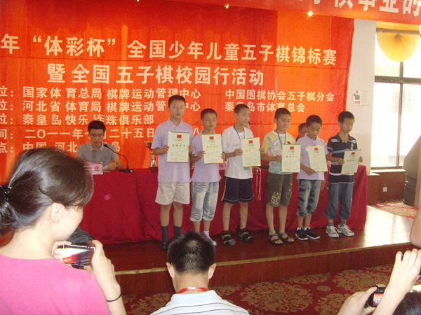
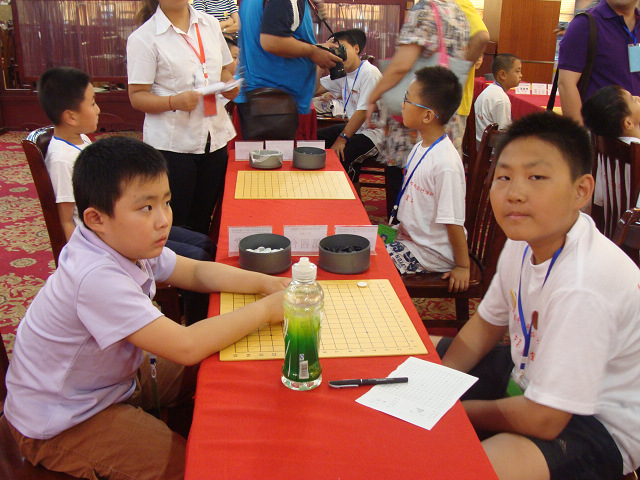
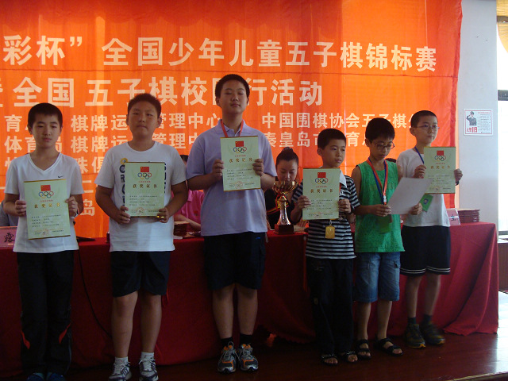
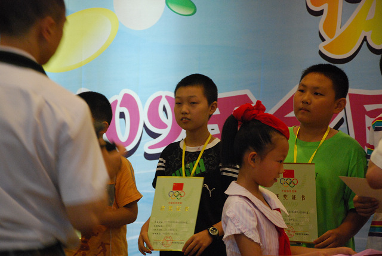

3月17日美少年战队★坏轩13岁生日。。。13岁，多么令人嫉妒羡慕恨的年龄啊。。。
祝你生日快乐！快快长大！
［此帖子已被 偶是逆风独立 在 2012-3-16 12:08:24 编辑过］
［ 寒夜潇潇 于 2012-3-16 21:25:59 时花20金币送鲜花一朵］
［ 寒夜潇潇 于 2012-3-16 21:26:20 时花20金币送鲜花一朵］
坏轩最近实战成绩：
2011年7月25-28日河北省秦皇岛市举办的2011年全国少年儿童五子棋锦标赛
聚贤美少年战队★坏轩（王轩） 男子儿童组第5

这是2011全少赛男子儿童组领奖照片。。不知哪个是坏轩。。。
［此帖子已被 偶是逆风独立 在 2012-3-16 12:30:50 编辑过］
貌似没有一个是王轩哟！


我来提供吧！
［ 寒夜潇潇 于 2012-3-16 21:28:21 时花20金币送鲜花一朵］
谢谢黄老邪。。。图1右，图2左2的？


［ 寒夜潇潇 于 2012-3-16 21:27:03 时花20金币送鲜花一朵］
［ 寒夜潇潇 于 2012-3-16 21:27:25 时花20金币送鲜花一朵］

2009年全少赛颁奖仪式上！
［ 偶是逆风独立 于 2012-3-16 21:06:21 时花20金币送鲜花一朵］
［ 偶是逆风独立 于 2012-3-16 21:06:30 时花20金币送鲜花一朵］
［ 偶是逆风独立 于 2012-3-16 21:06:33 时花20金币送鲜花一朵］
［ 寒夜潇潇 于 2012-3-16 21:28:46 时花20金币送鲜花一朵］

［ 偶是逆风独立 于 2012-3-16 21:26:31 时花20金币送鲜花一朵］
［ 偶是逆风独立 于 2012-3-16 21:26:34 时花20金币送鲜花一朵］
［ 寒夜潇潇 于 2012-3-16 21:29:19 时花20金币送鲜花一朵］

今天是美少年家族坏轩的生日
大家有时间今晚8点来YY为他唱生日快乐歌！
一起为他祝福吧！